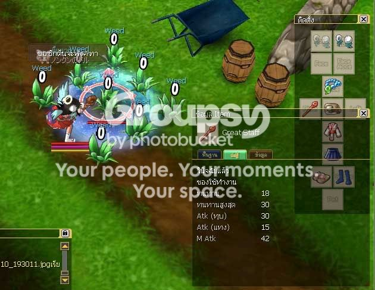
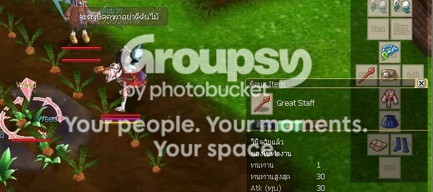
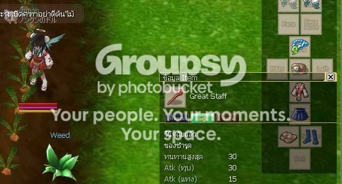

หน้า 1 จากทั้งหมด 2
[HowTo]ชาแมนสามารถระเบิดคฑา 45 ได้ภายใน 1 ชม

โพสต์แล้ว:
จันทร์ 10 ก.ย. 2007 9:29 pmโดย ECO
ทำยังไงน่ะหรอ ?
เริ่มแรกไปที่ฟาอีส เราจะเจอต้นผัก weed (ที่ดรอปแครอทอ่ะ)
เอากรูฟน้ำยิงลากไปลากมาให้ได้ เป็นสี่เหลี่ยม 3*3 แบบนี้ แล้วก็ Blast

เริ่มทำประมาณ 1 ทุ่มครึ่ง ที่ความทนทาน 24

ราวๆ ทุ่ม55ก็เหลือ1
แล้วก็แตกตอน 2 ทุ่ม 12 :lol:

ปล.ใครเบื่อๆไม่อยากยิงงี้ เอากรุฟยิงทีละต้นก็ได้นะช้ากว่าแต่สนุกดี :lol:
โพสต์แล้ว:
จันทร์ 10 ก.ย. 2007 9:41 pmโดย ECO
ลดน้ำให้ผัก จะได้ดรอปแครอท เยอะๆ *0*
จาว่าไป ยิงนี่ก็ดีอ่าครับเลือก/mpมะลดด้วย - -" แหะๆ ดันไปยิงหินในดันใต้ อิอิ ที่นั่นเจอทาทาเยอะเลย - -"
โพสต์แล้ว:
จันทร์ 10 ก.ย. 2007 9:49 pmโดย ECO
โอ ความรู้ใหม่ อย่างนี้ต้องลองมั่ง(แต่ชาแมนเค้ายัง 24 อยู่เลย -0-)
โพสต์แล้ว:
จันทร์ 10 ก.ย. 2007 10:10 pmโดย ECO
คือ........
ให้เพื่อนที่เป็นชาวนาปลูกหญ้าให้...... จะง่ายกว่าไหมอ่า........
ปลูกสัก 10*10 ไปเลย บลาสกันให้เพลินไปเลย
โพสต์แล้ว:
จันทร์ 10 ก.ย. 2007 10:48 pmโดย ECO
อ่านะ เข้าใจคิดจริงๆ ไปลองบ้างดีกว่า
ปล. เห็นแบบนี้แล้วนึกถึง harvest moon เลย ปลูกผักเป็นแปลง 9*9 แล้วก็รดน้ำด้วยฝักบัวสีเหลือง
เดี๋ยวพอถึงเวลาก็เก็บเกี่ยวผลผลิตออกมาเป็นแครอท 9 อัน
โพสต์แล้ว:
จันทร์ 10 ก.ย. 2007 11:09 pmโดย ECO
แง ชาแมนรดน้ำได้ ดีจัง
ข้อเสียของเวทย์ไม่มีธาตุ นอกจากเบาคือทำเควสนี้ยากนี่เอง - -
โพสต์แล้ว:
จันทร์ 10 ก.ย. 2007 11:24 pmโดย ECO
เห็นแล้วนึกถึง harvest moon จริงๆนั่นล่ะ
เทียบกับรูปนี้


ปล. รูปล่างไม่เกี่ยว เอามาลงเฉยๆ
โพสต์แล้ว:
อังคาร 11 ก.ย. 2007 9:00 amโดย ECO
แงๆ นู๋ เลเวล60 แว้ว ซื้อ เท้ากะหมวก55ใส่หมดแล้วด้วย แต่ไม้เท้า นู๋ ยัง 30/30 อยู่เลย 1ชั่วโมงพังจริงง่ะ เดี๋ยวให้ เพื่อน ฟราเมอร์ ปลูกต้นไม้ให้ คริ คริ ทำลายไม้เท้า
ปล. บอกให้คนที่ยังไม่รู้ไม่เคยลองนะ คะ Red talisman ตี+ได้เจ้าค่ะ แต่การ+เหมือนโล่นะคะ ถ้าเอาเมจิค คริสตัล ตีก็จะได้ +M Def เรานึกว่า ได้ M-Atk เลยกดไปซะ 6 แหม่ไม่แตกด้วยนะ พอติด+6เอามาดู +10 M Def แง้วๆ แถมความทนทานเหลือ 3/10 แว้ว แงๆ ของนู่จะแตกแล้ว ตี+ไปแล้วด้วย งื้ดๆ......
โพสต์แล้ว:
อังคาร 11 ก.ย. 2007 4:23 pmโดย ECO
ขณะนี้กำลังซัด volcano bullet ด้วยความตั้งใจอย่างยิ่ง 30 -> 1 ใน 1 ชั่วโมง
2 ชั่วโมงต่อมามันก็ยังไม่คิดจะลดลงเพิ่ม oTL~
โพสต์แล้ว:
อังคาร 11 ก.ย. 2007 5:26 pmโดย ECO
Ryriepyr เขียน:เห็นแล้วนึกถึง harvest moon จริงๆนั่นล่ะ
เทียบกับรูปนี้
ปล. รูปล่างไม่เกี่ยว เอามาลงเฉยๆ
เหมือนเป๊ะ *0*
โพสต์แล้ว:
อังคาร 11 ก.ย. 2007 10:10 pmโดย ECO
จากการทดลองเพิ่มเติมทำให้ทราบว่า
Weed, Glass, Tree (ทุกชนิด), Wood, Flower (รวมถึง Greenhouse แต่ยกเว้นดอกไม้ธาตุ) เป็นธาตุน้ำ 100 ทั้งสิ้น
ถ้าไปยิงใน map ไร้ธาตุเช่น ((ทิศ) Acronia Field) หรือในเมือง (ยังไม่ได้ลอง Farm ลับของ Farmer) ด้วยเวทย์สายน้ำล้วนจะลด 0 หมด =w="
ดังนั้นหากมีเพื่อนเป็น Farmer ก็สามารถใช้วิธีนี้แถวรอบเมืองได้ไม่ต้องไปลากแถว Fareast
แต่มันมีข้อเสียที่ต้องคอยปลูกเป็นระยะๆเพราะต้นไม้ที่ปลูกมีระยะเวลาเฉาตาย(นานพอตัว mp 550 ยิงนัดละ 10 รัวจนแปลงไทนี่เกือบหมดเวลานู่นถึงจะเริ่มเฉา)
ลองกับ purple flower ไปแล้ว 3*3 ....... 1->0 ยังคงไม่สำเร็จ oTL~
โพสต์แล้ว:
อังคาร 11 ก.ย. 2007 10:17 pmโดย ECO
โอ้.... Harvest Moon
เกมส์ที่ดีที่สุดเกมส์นึง ที่เคยเจอมา.......
โพสต์แล้ว:
พฤหัสฯ. 06 ธ.ค. 2007 9:05 pmโดย ECO
เควสพังคทา
รับได้ที่ไหนหรอครับ
แล้วมีเงื่อนไขยังไงหรอ ?
โพสต์แล้ว:
พฤหัสฯ. 06 ธ.ค. 2007 9:58 pmโดย ECO
อุ๊ย กระทู้เก่าแก่
เควสพังคทานี้รับได้ตอนเวล 45 ครับ
ที่ Ironsouth upstair ในที่ทำการเมืองกะ npc แก่ๆครับ
เมื่อพังมันได้ จะได้รองเท้าประจำอาชีพ 55
โพสต์แล้ว:
พฤหัสฯ. 06 ธ.ค. 2007 9:58 pmโดย ECO
เควสต้องการเวล 45 +
รับเควสที่ NPC ลุงแก่ๆในอาคารเมืองใต้ชั้นบน
Edit: ช้าไปเสี้ยววิ T T